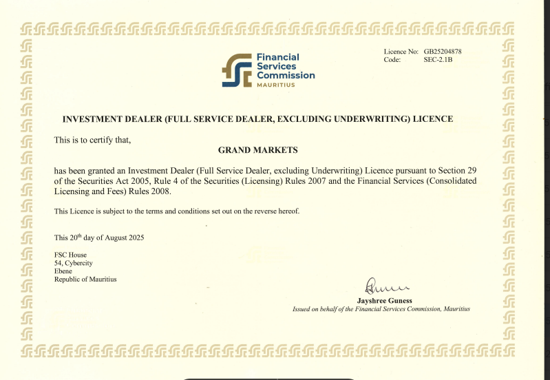
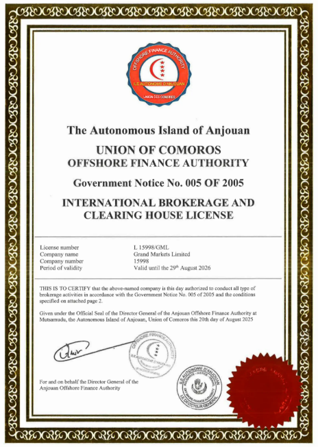

About Us
Grand Markets Group
Grand Markets Group（GM 集团）成立于 2020 年，总部位于澳大利亚悉尼，持有澳洲 ASIC 金融服务牌照（AFSL #554475）及毛里求斯 FSC 牌照，业务覆盖六个国家和地区，团队规模超过 200 人。
“Grand Markets”寓意以盛世、宏大连接全球市场，致力于为专业交易者和机构客户提供多资产、多市场的金融教育、交易基础设施与金融科技解决方案。
集团旗下包含 Grand Markets Academy、Grand Markets Trading、Grand Markets Australia 等七大核心子公司，战略合作伙伴覆盖中金公司、PandaAI、LMAX 等国际顶级机构。
Sydney, Australia · Grand Markets HQ
Group Structure
集团架构与业务版图
Global Operating Network
以悉尼总部为核心，GM 集团将金融教育、交易基础设施、科技研发、合规牌照与国际生态整合为一套全球化业务版图。
100% 控股子公司
Academy · Trading · Australia · Mauritius · HongKong · Capital · Tech
集团持股公司
TraceVaults（链上风控与 AML 监测）· Jade Days（中国旅游服务）
战略合作伙伴
中金公司 CICC · PandaAI · LMAX 及数十家机构与科技生态伙伴
参与协会与组织
联合国全球契约组织 · FinTech Australia 及全球金融科技生态组织
Timeline
发展历程
品牌起点
完成对 GM 的品牌建立，正式成立 Grand Markets 品牌，开展自营交易业务。总部设立于澳大利亚悉尼。
蛰伏 · 基础建设期
开展券商业务布局与团队组建，取得 Comoros MISA 做市商牌照，完成离岸牌照合规框架。同步搭建自研 CRM 系统和交易 APP 原型，为后续全球化运营打下技术基础。
起势 · 架构完成
全球化组织正式成型，完成公司实际架构搭建，组建覆盖澳洲、马来西亚、台湾、香港、MENA、东欧六大区域的运营团队。合规、技术、运营三位一体的全球化组织成型，2023 年底全员接近 100 人。
里程碑 · ASIC 持牌
开始收购澳大利亚 AFSL 做市商金融牌照（AFSL #554475），跻身全球一线监管体系。同时持有毛里求斯 FSC 牌照，形成多牌照合规框架。
国际组织与行业协会
加入联合国全球契约组织（United Nations Global Compact），响应全球可持续发展；加入 FinTech Australia，积极推进金融科技创新，并参与澳大利亚金融科技行业政策讨论与生态建设。
战略合作 · AI 量化
与中国国际金融股份有限公司（中金公司，CICC）旗下 CICC Commodity Trading Limited 正式完成大宗商品机构协议签署，推动机构级交易基础设施建设。同期与 PandaAI 达成战略合作，协同 20 余家中国头部基金、券商举办量化因子大赛，参与者达数万人，推进 AI 量化创新。
品牌提升 · CIIE
参加由中华人民共和国商务部和上海市人民政府主办的中国国际进口博览会（CIIE），积极响应“一带一路”金融合作，并获得中国国际进口博览会感谢信。
战略加速
新春晚会登录广东卫视，向全国人民拜年。团队规模现已超过 200 人，覆盖 6 个国家和地区；Grand Markets Limited 产品体系资料待补充。
License Credential
受全球一线监管体系保护
GM 集团持有三重合规牌照框架，为机构客户与专业交易者提供最高规格的监管保障。
AFSL#554475
AustraliaASIC AFSL #554475
澳大利亚证券与投资委员会颁发，全球最高规格金融监管之一，做市商牌照。

Mauritius FSC
毛里求斯金融服务委员会颁发，投资交易商牌照，多牌照合规框架核心。

Comoros MISA
科摩罗 MISA 做市商牌照，离岸合规框架，集团早期合规布局基础。
Partners & Ecosystem
与全球顶级机构共同构建金融生态
Institutional Ecosystem
从国际组织、行业协会、展会奖项到机构级交易与 AI 量化合作，GMA 的生态更适合用“关系网络”呈现，而不是简单罗列 Logo。
国际组织与行业协会
United Nations Global CompactFinTech Australia
行业荣誉与国际展会
Wiki Finance ExpoCIIE 中国国际进口博览会央视品牌强国
机构与金融科技伙伴
CICC Commodity Trading LimitedPandaAILMAX
科技风控与投资版图
TraceVaults 链上风控与 AML 监测Jade Days 中国旅游服务
Social Responsibility
企业公民 · 回馈社会
2025 年，Grand Markets 受邀参加澳大利亚总理慈善晚宴，拍得阿尔巴尼斯总理亲笔签名红酒，拍卖所得款项全数捐赠慈善事业。
集团积极推进全球范围内的公益事业，持续向联合国儿童基金会（UNICEF）等多家国际慈善机构进行捐赠，践行可持续发展与企业社会责任承诺。

6覆盖国家和地区
200+当前团队规模
3合规牌照框架